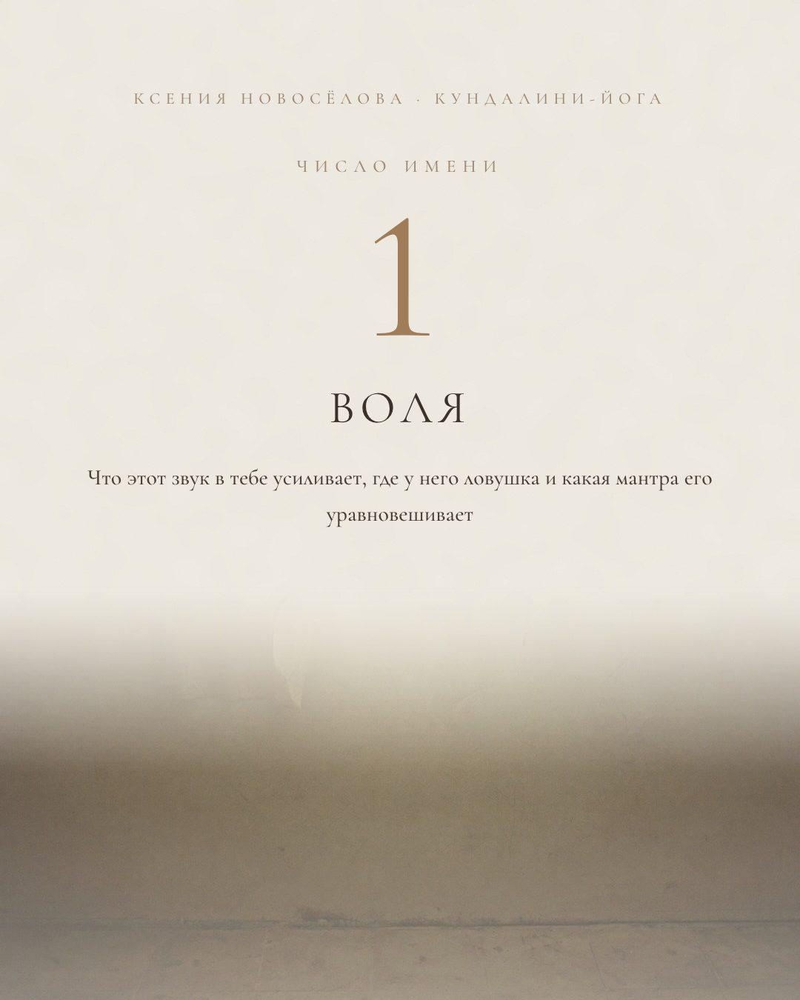
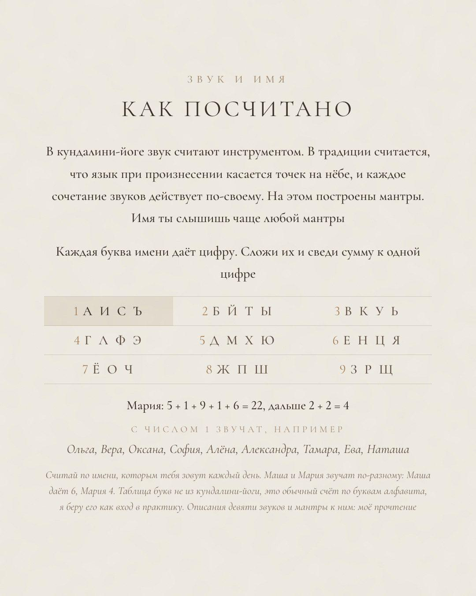
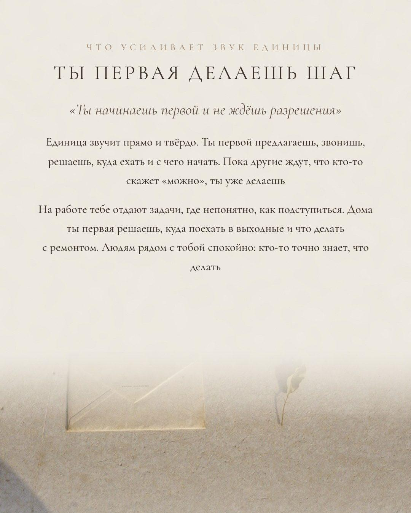
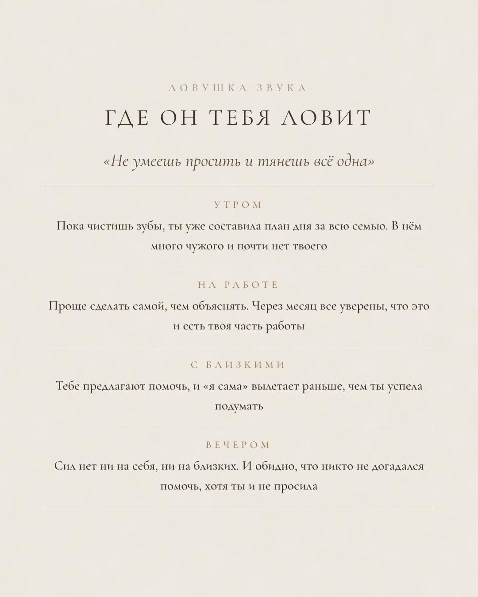
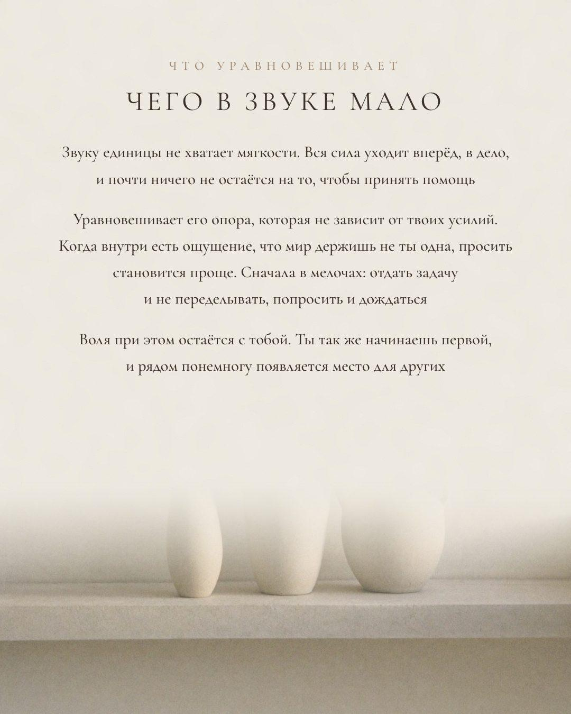
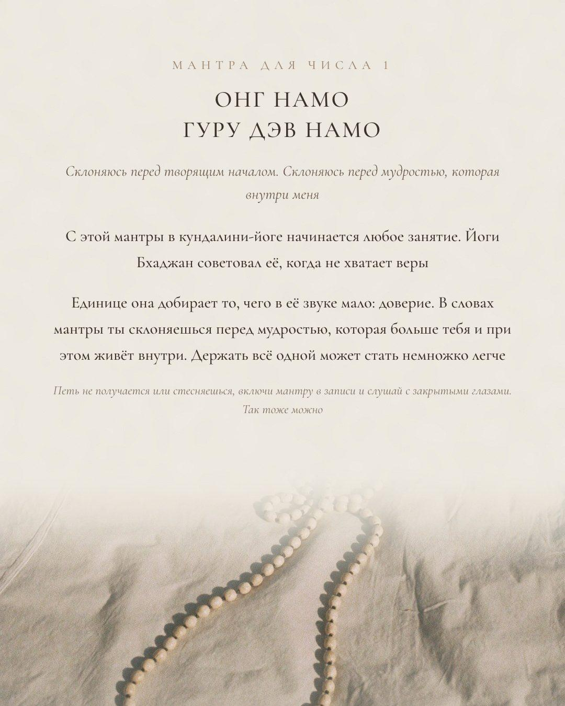
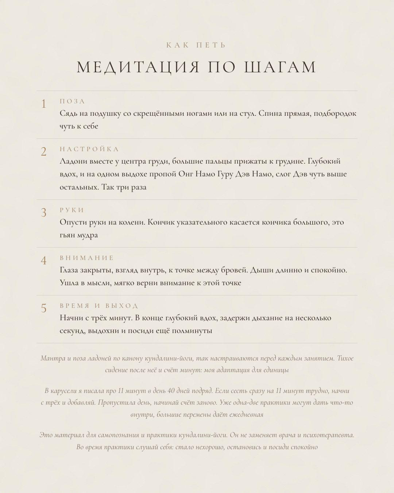
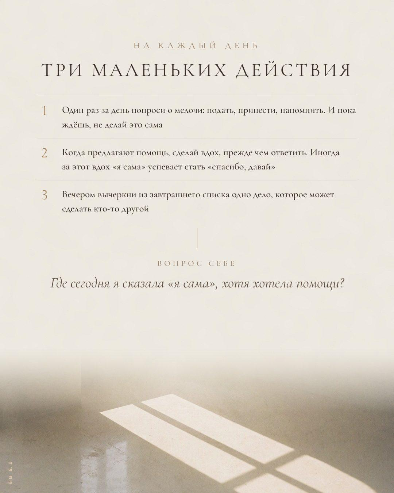
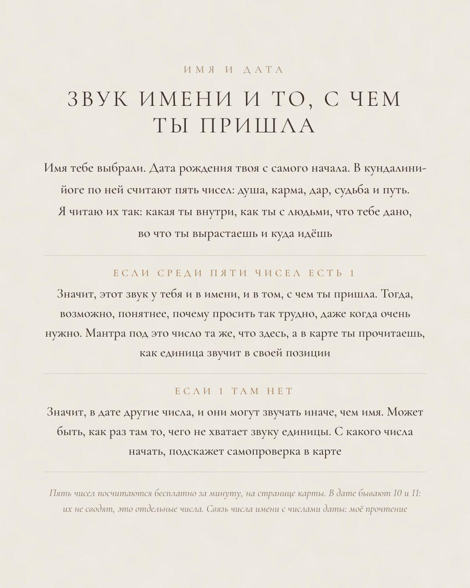
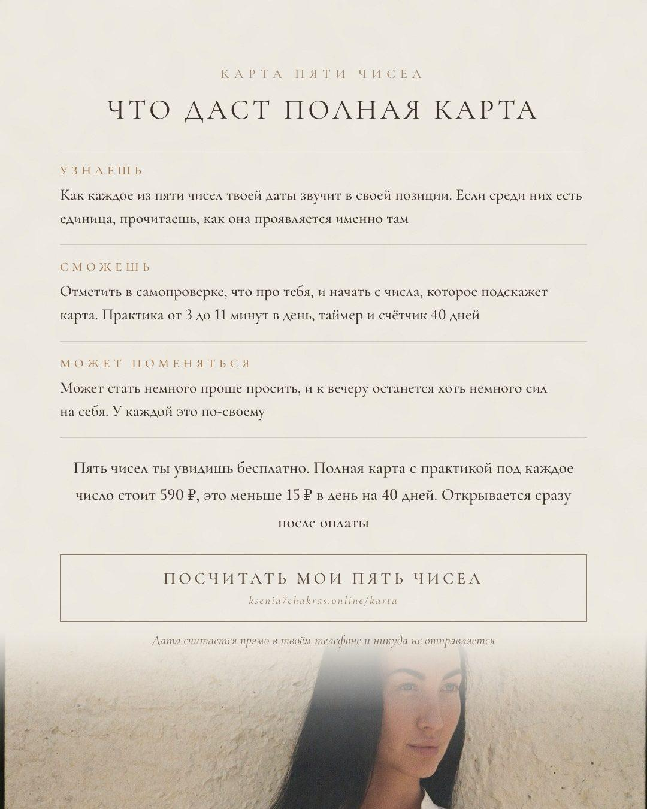

Есть ли 1 в твоей дате
Введи дату рождения на странице карты, и пять чисел увидишь сразу и бесплатно. Если среди них есть 1, этот звук у тебя и в имени, и в дате. Если нет, в дате другие числа, и они могут звучать иначе. В полной карте под каждое число расшифровка в его позиции и практика
Посчитать мои пять чиселДата считается прямо в твоём телефоне и никуда не отправляется
Скачать PDF Посчитать другое имя